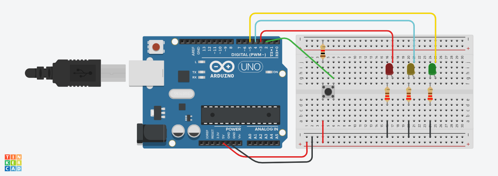

O Arduino é uma plataforma que tem como objetivo facilitar a amostra de projetos eletrônicos, onde fundi software e hardware, facilitando as pessoas criarem dispositivos inteligentes. Utilizamos o Tinkercad como uma das plataformas para estudar sobre programação do Arduino, o sistema oferece duas opções de programação a de bloco ( sistema de arrastar e soltar) e a da texto (linguagem tipo C++ que foi a utilizada por nós).
Algumas características específicas da linguagem c++:
Função obrigatória:
setup (): Usada para começar o programa, sendo chamada uma vez.
loop (): Usada para executar o código repetidamente.
Manipulação de pinos:
pinMode(pin, mode): Configura entrada ou saída do pino.
digitalWrite(pin, value): Escreve um valor no pino digital.
Manipulação de pinos:
digitalRead(pin): Lê o valor do pino digital.
analogRead(pin): Lê o valor do pino analógico.
analogWrite(pin, value): Escreve um valor analógico em um pino digital.
Função de Temporização:
delay(ms): pausa o programa por uma quantidade de milissegundos.
millis(): Retorna o tempo em milissegundos desde que começa a executar o programa atual.
Outra plataforma que utilizamos foi o Wokwi que é uma ferramenta que permite de maneira fácil e simples simular projetos de Arduino, sem a necessidade de ter hardware físico.O Wokwi permite fazer simulação em tempo real, e a interface gráfica intuitiva evidencia a facilidade no seu uso. Ele é compatível com várias placas de Arduino como o Uno, Mega e Nano. E por ser simples e fácil de mexer ele se torna útil para ser utilizado educacionalmente.